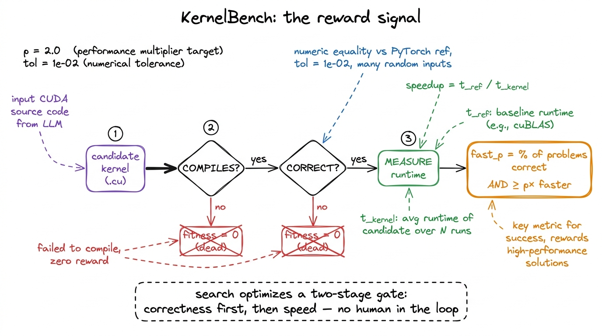
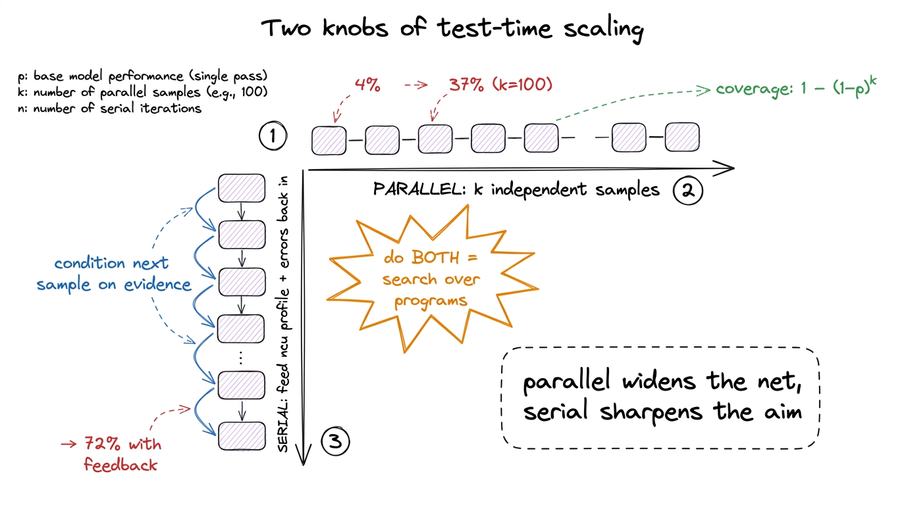
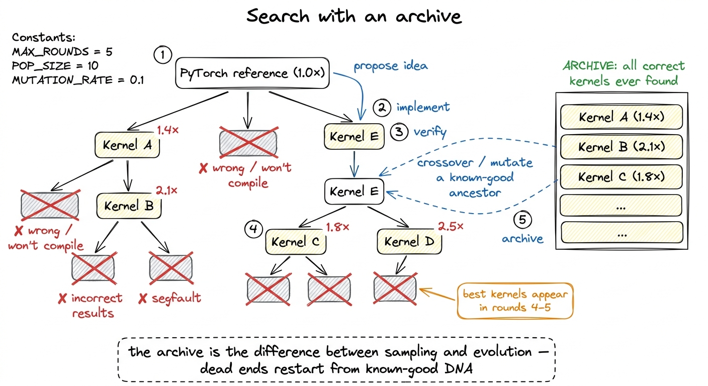
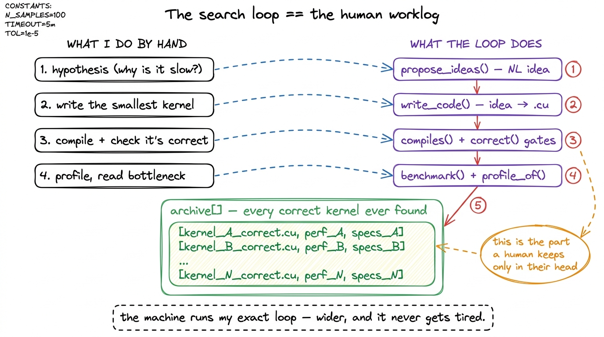
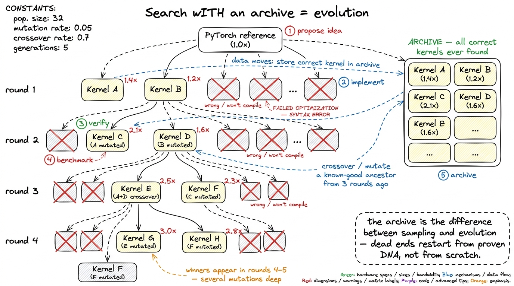
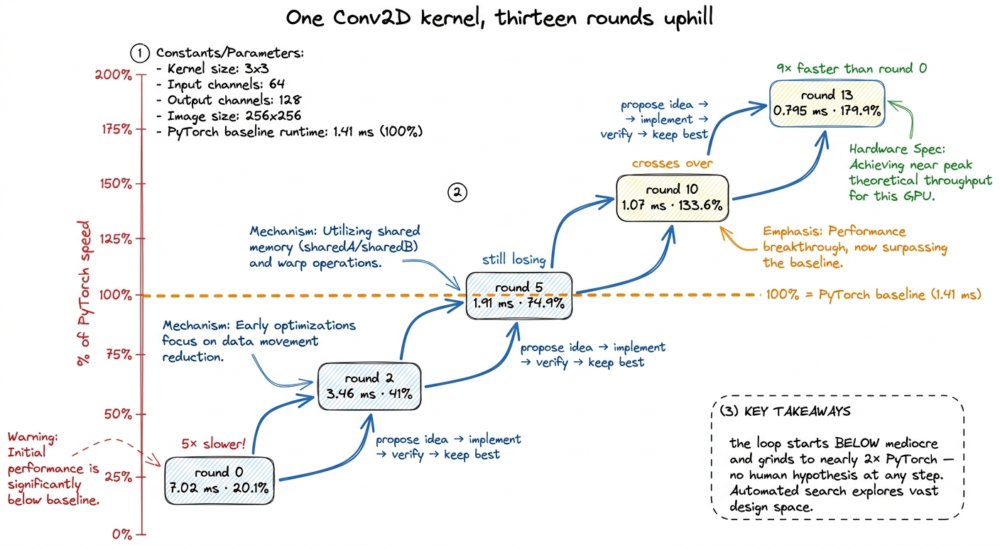
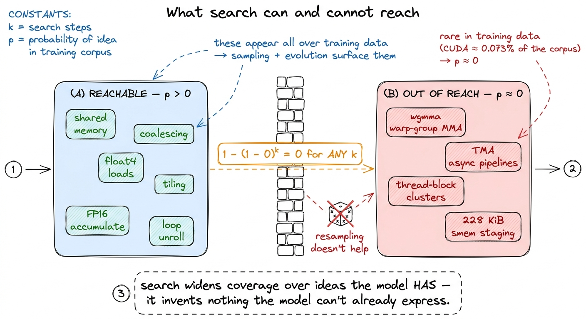

Monkeys & search: test-time scaling
Let me start with the most basic question, the one that sounds almost too simple to ask: when you write a fast GPU kernel by hand, what are you actually doing? Not the typing. The thinking. Watch yourself do it and the loop is always the same. You have a slow kernel. You form a guess about why it's slow — "these loads aren't coalesced," "the tile doesn't fit in shared memory," "I'm bank-conflicting." You make one small change that tests that guess. You compile it. You check it still produces the right answer. You measure it. Then you read the profiler, form the next guess, and go again.
Every kernel in the GEMM ladder I climbed was built exactly this way — and I was the search algorithm. State a hypothesis, write the smallest kernel that tests it, profile it, read the bottleneck the profiler hands back, pick the next move, keep the ones that got faster, throw away the ones that didn't. That is a loop with a very particular shape. Propose a candidate, compile it, verify it, score it, keep the good ones, mutate them, repeat. If you squint, that is not "engineering" in the artisanal sense at all. It is a search over programs, guided by a fitness score.
And once you see it as a search, the obvious question almost asks itself: does the searcher have to be me? Could I put a language model in that loop instead of a human, and let it turn the crank? This article is about what happens when you do — and the honest, slightly humbling answer from 2025 is that it works far better than it has any right to, but only for a reason that has almost nothing to do with the model being smart. The reason is the loop. So this is really an article about a loop, and about the one component inside it that is quietly doing all the load-bearing work: the verifier.
I'll build the whole thing from that one idea. We'll start with a single sample and watch it mostly fail. We'll draw a hundred samples and watch it mostly succeed, and derive on a napkin exactly why. We'll add feedback, then an archive, then evolution, and watch each addition buy a specific, measurable jump. And we'll be honest at the end about the wall this hits — the ideas the model simply cannot reach, no matter how hard you turn the crank.1 Primary sources for every number in this article: Simon Guo's survey "Automated GPU Kernels" (2025-10) and the Stanford CRFM post "Surprisingly Fast AI-Generated Kernels" (2025-05-28). Where I quote a percentage or a runtime, it comes from one of those two, and I'll flag when a figure is from a specific model or GPU so you don't over-generalize it.
First, the thing that makes any of this possible: a checkable answer
Before search, you need a way to score a candidate. This is not a detail — it is the entire foundation. So let's be very careful about it.
Most tasks we ask language models to do have no cheap, trustworthy score. "Write me a good essay" — good by whose measure, checked how? You end up needing a human, or another model pretending to be a human, and now your score is soft, slow, and gameable. Kernels are the rare, beautiful exception. A kernel has a ground truth answer, because it's supposed to compute the same thing as a reference implementation you already trust — a line of PyTorch. So you can check a generated kernel two ways that require no judgment at all:
- Does it compile? Feed it to
nvcc. The compiler says yes or no. There is no arguing with a compiler. - Is it correct? Run it on a pile of random inputs, run the PyTorch reference on the same inputs, and compare the outputs number-by-number. If they match within a tolerance, it's correct.
Both checks are mechanical, fast, and impossible to sweet-talk. That property — a cheap, honest, automatic score — is what turns "generate a kernel" into "search for a kernel." Hold onto this, because it's the mental model for the entire article. The generator proposes; the verifier disposes. The reliability of the whole system will come from the verifier, not the generator, and almost every result below is really a statement about how much you can lean on a trustworthy score.
The benchmark that packages this up is KernelBench. It hands a model a PyTorch reference module and asks for a custom CUDA kernel that (a) matches the reference numerically and (b) runs faster. It comes in three levels, and the levels matter, so let's name them:
- Level 1 — single operators. One matmul. One convolution. One softmax. The atoms.
- Level 2 — short fused sequences. A conv, then a bias add, then a ReLU. This is the level where fusion is the whole game, and where operator fusion intuition earns its keep — the win is not doing the math faster, it's not re-reading HBM between the steps.
- Level 3 — end-to-end architectures. A whole Vision Transformer block, a Mamba block. The molecules.
The score is a metric called fast_p: the fraction of problems for which the model produced a kernel that is both correct and at least p times faster than the PyTorch baseline. So fast_1 means "correct and at least as fast as PyTorch"; fast_2 means "correct and at least twice as fast." Correctness here is numerical equality against the reference over many random inputs, at a tolerance of 1e-02.2 That 1e-02 tolerance is generous, and on purpose. A fused kernel reorders floating-point accumulation, so bit-exact output is impossible — (a+b)+c and a+(b+c) differ in the last bits. But the looseness is also a small attack surface: a kernel can "pass" while being subtly wrong on inputs the random sampler happened never to hit. This is exactly where reward hacking sneaks in, and we'll come back to it.

figure rendering · The KernelBench reward. A candidate earns a speed score only after cleWhy belabor the score? Because the rest of the article is a sequence of tricks that all cash out in the same currency: they let the search see more candidates or see better candidates, and the verifier decides which ones survive. Keep your eye on the verifier and every result stops being surprising.
The single-shot baseline: mostly, the model just fails
Let's establish the floor. Take a strong general model with no special kernel training, hand it a KernelBench problem, and ask for a kernel once. How often does it produce something correct and faster?
Across all three levels, frontier models in early 2025 landed under 20% on fast_1 in a single shot. Zoom into Level 2 specifically — the fusion problems — and DeepSeek-V3 succeeds about 4% of the time when you draw one sample.3 4% is DeepSeek-V3, single sample, Level 2. Different models and different levels give different floors; the specific number matters less than the shape. What all the floors share: writing a correct, fused, faster-than-PyTorch CUDA kernel in one try is genuinely hard, and general models mostly can't.
Take a second to feel how bad 4% is, and why it's not surprising. To win a single Level 2 problem in one shot, the model has to, in a single forward pass with no feedback: pick a correct fusion, get the CUDA syntax right, get the indexing right, get the shared-memory staging right, get the boundary conditions right, and end up faster than a library PyTorch already tuned. Any one slip and the verifier scores it zero. One-shot kernel writing is a high-wire act with no net, and the model falls off almost every time.
So here's the natural place a curious person gets stuck: if the model is this bad — 4%! — how does any of this become useful? The intuition says a 4% generator is worthless. The intuition is about to be very wrong, and the reason it's wrong is the most important idea in the article.
Monkeys: why a hundred bad samples beat one good one
Here is the move that reframed the entire field. Don't draw one sample. Draw a hundred independent samples for the same problem, compile and check every one against that trustworthy verifier, and keep the single best.
Same model. Same prompt. No feedback between samples. No cleverness. Just a hundred rolls of the dice, filtered through the gate. On DeepSeek-V3, Level 2, the success rate goes from 4% to 37%. A nearly ten-fold jump, and the model didn't get one neuron smarter.
Why does this work so absurdly well? Let's derive it, because the math is short and it's the load-bearing math of the whole area. Suppose a single sample solves a given problem with probability p. The samples are independent, so the chance a single sample fails is (1 − p). The chance that all k samples fail is (1 − p)^k. Therefore the chance that at least one of the k samples succeeds — which is all you need, because the verifier will find it for you — is:
coverage = 1 − (1 − p)^kNow put the numbers in. Take a dismal p = 0.04 and k = 100:
1 − (1 − 0.04)^100 = 1 − 0.96^100 ≈ 1 − 0.017 ≈ 0.98The math says a 4%-per-try generator should clear 98% of problems given 100 tries. Read that again — a generator that fails 96 times out of 100 becomes a solver that succeeds 98 times out of 100, purely by being allowed to try a hundred times against a checker that never gets tired. This is the "infinite monkeys" phenomenon: a weak generator plus a trustworthy verifier is a strong solver, and it's the verifier, not the generator, carrying the reliability.4 The "monkeys" name is from the Large Language Monkeys line of work (Brown et al.), which showed that coverage — the chance any of k samples is correct — climbs smoothly, often log-linearly in log k, across coding and math. Kernels are an unusually clean instance because the checker is a compiler plus a numerical diff, so there's essentially zero label noise in the reward.

figure rendering · The monkeys effect. Even a 4%-per-try generator clears most problems iBut notice the gap. The math predicted 98%; the measured result was 37%. That gap is not noise, and it's the most instructive thing on the page. The formula assumed every problem has some positive p. In reality, some problems have p = 0 for this model — the required idea is something it flat-out cannot express, so no number of resamples ever produces it. There's a concrete, almost funny example: when researchers monkeyed DeepSeek-V3 across the benchmark, it never solved a single convolution problem — not once in a hundred tries — because the winning convolution kernel needs a structure the model simply doesn't reach for. Sampling buys you coverage over the ideas the model can express. It buys you exactly nothing over the ones it can't. Tuck that away; it's the wall at the end of the article.
Serial feedback: turning the profiler into the next prompt
Parallel sampling has a flaw you can feel immediately: it's memoryless. A hundred blind guesses, none of which learns anything from the ninety-nine others. Every sample starts from the same blank slate. When I write kernels, that's not what I do at all — I read the profiler after each attempt and let it steer the next one. So the second knob is serial refinement: run one kernel, feed its compiler errors and its ncu profile back into the prompt, and let the model react to evidence.
When the Stanford group did this with DeepSeek-R1 — iterative turns, each one carrying the verifier result and the profiler breakdown back into the context — Level 2 climbed from a single-shot 36% to about 72%.5 The 72% here is DeepSeek-R1, and its single-shot baseline is 36% — a different model from the DeepSeek-V3 whose 100-sample number was 37%. That the two lines start near the same place is a coincidence of the benchmark, not one run flowing into the other. R1 is a reasoning model, which is exactly why it can use a profiler trace: it can reason over "occupancy is 25%, these loads are uncoalesced" the way a base model can't.
Sit with that doubling — 36% to 72% — because it's doing something categorically different from sampling. Parallel samples widen the net: more independent shots, higher coverage over what the model can already reach. Feedback sharpens the aim: it moves the model's conditional distribution. When the profiler says "you're memory-bound, occupancy is 25%, these global loads are uncoalesced," that is precisely the three-regimes diagnosis I'd make by hand, and conditioning the next sample on it shifts probability mass toward the actual fix — stage the tile in shared memory, coalesce the loads. The model isn't guessing blindly anymore; it's guessing informed. Coverage widens the search; feedback deepens it. You want both. And the clean way to have both is to stop thinking in "samples" and start thinking in search.

figure rendering · The two knobs. Parallel sampling raises coverage over reachable ideas;The loop, drawn as search: propose an idea, then write the code
Both knobs are the same thing wearing two hats: a search over the space of programs, where a move is "generate a variant" and the fitness is fast_p. Once you name it search, the entire vocabulary of search opens up — and the best 2025 systems reach straight for it.
The single most productive idea, from Anne Ouyang and the CRFM group, is deceptively small: split the move in two. Don't have the model jump straight from "here's a slow kernel" to "here's a new kernel." First have it propose an optimization idea in natural language — "stage the B tile in shared memory," "vectorize the loads with float4," "pad the shared array to kill bank conflicts," "cut precision to FP16 for the accumulate" — and only then have it realize that idea as code.
Why does this two-step help so much? Think about the space each step searches over. Raw code is a huge, tangled space, and greedy code generation collapses toward the same local shape every time — you ask for five kernels and get five near-identical ones, because the model's most-likely continuation is the same each draw. Ideas are a much smaller and much more diverse space. You can genuinely enumerate five different strategies at a decision point — memory, async, precision, occupancy, control flow — and they fan out into genuinely different code. In fact the CRFM run found its winners clustering into exactly six recurring idea-families: memory-hierarchy optimization, asynchronous latency hiding, precision reduction, instruction-level efficiency, warp-occupancy enhancement, and control-flow simplification — the whole vocabulary of this course, discovered from the outside by a search loop, the same moves I make climbing the GEMM ladder by hand, just named by the machine. This is exactly the decomposition I use as a human: I decide what to try before I write how. Separating the two lets the search be diverse where diversity is cheap (ideas) and precise where precision is needed (code).
The CRFM group then pushed this into a branching search instead of a linear chain of edits. Each idea fans out into several implementations. The fastest kernels of a round seed the next round. They ran 5 rounds with OpenAI's o3 and Gemini 2.5 Pro across 10 KernelBench Level 1 problems, on a token budget of roughly 3 million input and 4 million output tokens — and here's the tell: most of the winning kernels showed up only in rounds 4 and 5. The good stuff was several mutations deep. A greedy loop that kept only the single best child each round would very likely have pruned the lineage that led to the winner before it ever got fast. Branching keeps the tree alive long enough for a late idea to compound on an early one.
Here is the loop as pseudocode, because the shape is the entire point:
archive = [] # every correct kernel we have ever found
seeds = [pytorch_reference] # round 0 starts from the reference itself
for round in range(NUM_ROUNDS):
children = []
for seed in top_k(seeds, K): # branch from the current best
ideas = model.propose_ideas(seed, profile_of(seed)) # STEP 1: NL, diverse
for idea in ideas: # fan out: one idea -> many impls
for _ in range(SAMPLES_PER_IDEA):
kernel = model.write_code(seed, idea) # STEP 2: idea -> code
if not compiles(kernel): continue # gate 1
if not correct(kernel, tol=1e-2): continue # gate 2
kernel.speed = benchmark(kernel) # fitness
children.append(kernel)
archive.append(kernel) # remember EVERYTHING that worked
seeds = children # survivors seed the next round
best = max(archive, key=lambda k: k.speed)Map this back onto the hand-written worklog and every piece lines up. propose_ideas is the hypothesis. write_code plus the two gates is implement, then verify correctness. benchmark and profile_of are measure and read the bottleneck. The one part a solo engineer keeps only in their head — the memory of everything that ever worked — is written out explicitly here as the archive. And that little list is the difference between two very different kinds of search.

figure rendering · The loop is the worklog. Every step of the automated search maps one-tThe archive: this is where sampling becomes evolution
That archive is the hinge. Let me make the distinction sharp, because it's the difference between a good system and a great one.
Best-of-N sampling with a linear refinement chain has a fatal move: when a round produces nothing good, you're stuck. Your only living state is the current seed, and if it's a dead end, you either restart from scratch or keep polishing a corpse. Evolutionary search with an archive never has this problem. Because you kept every correct kernel you ever found, a dead-end round can reach back into the archive, pull out a known-good ancestor from three rounds ago, and branch from there instead. You can also recombine: take the tiling from one past winner and the async pipeline from another and ask the model to cross them. The archive is a gene pool. It turns "sample until you get lucky" into "evolve from proven DNA."
This is the through-line of the strongest 2025 systems. Sakana AI's AI CUDA Engineer maintains an active archive of good kernels discovered during exploration and evolves against it — crossing over and mutating past winners rather than always regenerating from the reference. DeepMind's AlphaEvolve wraps the same propose-verify-keep loop in a full evolutionary framework and reports a 32.5% speedup on a JAX/Pallas FlashAttention kernel — not a toy, but a real attention kernel in a real framework, found by a machine turning this crank at scale. The pattern is identical every time: an archive of verified winners, an LLM proposing mutations against it, and a trustworthy verifier deciding who lives.

figure rendering · Evolutionary search. Keeping every verified kernel lets the loop recomWhat the ceiling actually looks like
So how fast do the kernels this loop finds actually get? The measured numbers are, frankly, startling — and I want to show them zoomed in on a single trajectory, because an aggregate percentage hides what's really happening.
On an L40S, the CRFM branching search produced kernels that beat stock PyTorch on real single ops. Reported as a ratio of reference time to kernel time (so anything over 100% is faster than PyTorch): 101.3% on a 4096² FP32 torch.matmul, 111.8% on a torch.softmax, 179.9% on torch.nn.Conv2D, a Conv2D+ReLU+MaxPool fusion at 290.1% versus the eager reference (and still 189.0% versus torch.compile()), and — the headline — 484.4% on torch.nn.LayerNorm.6 All on an L40S, not the H100 this course otherwise targets, and all ratios of reference time ÷ kernel time. Read them as "a search loop can beat a naive framework op by multiples," not "AI beats cuBLAS." The LayerNorm and softmax baselines are soft targets — a memory-bound reduction that PyTorch runs as several separate passes is easy to fuse and crush. None of these come near a hand-tuned wgmma GEMM; the 101.3% on matmul, barely over parity, is the honest tell of how hard the compute-bound case stays.
Now the zoom-in. Follow one Conv2D trajectory across its rounds and watch the loop crawl uphill (baseline PyTorch is 1.41 ms):
round 0: 7.02 ms ( 20.1% of PyTorch) <- first attempt, 5× SLOWER than the baseline
round 2: 3.46 ms ( 41.0%)
round 5: 1.91 ms ( 74.9%) <- still losing to PyTorch
round 10: 1.07 ms (133.6%) <- crossed over; now beating it
round 13: 0.795 ms (179.9%) <- final: 9× faster than its own round 0That is the whole thesis of the article compressed into five lines. The first kernel the model wrote was five times slower than PyTorch — a completely unremarkable, mediocre kernel. Thirteen rounds of propose-idea → implement → verify → keep-the-best later, the loop had a kernel nearly twice as fast as PyTorch, a 9× self-improvement, and it got there without a human forming a single hypothesis. Every one of those thirteen steps is a move I'd recognize from climbing the GEMM ladder by hand. The machine just made the moves, in order, and never got bored around round 6 where a human might have quit.

figure rendering · A single trajectory. The search begins with a kernel five times slowerCan you train the model to be a better searcher? Yes, a little
There's a natural follow-up question. Everything so far uses a frozen model and spends compute at test time. What if you also train the model to be better at this loop? That's the Kevin line of work — multi-turn reinforcement learning where the reward is, again, the KernelBench verifier: correctness and speedup. Train a model (Kevin's base is QwQ-32B) to iterate over turns with the profiler in the loop, and reward the trajectories that end in fast, correct kernels.
The numbers move in the direction you'd hope. On a slice of KernelBench, Kevin's correctness climbs from 56% to 82%, and its mean speedup versus PyTorch Eager goes from 0.53× to 1.10× — that is, from slower than PyTorch on average to finally beating it.7 0.53× → 1.10× is a mean over the problem set, so it's dragged down by the ops the model can't crack at all; the frontier winners are far faster than 1.10×, but the average is honest about the failures. The lesson isn't the exact number — it's that RL against the verifier reward moves both axes at once: more kernels become correct and the correct ones get faster. What's worth noticing is that training and test-time search aren't rivals; they stack. Training raises the per-sample p (so the same k samples cover more), and search still runs on top of the better base model. A higher p makes the 1 − (1−p)^k curve climb faster — you get to high coverage with fewer, cheaper samples. Better generator, same verifier, more efficient search.
There's a quiet structural reason models are bad at this to begin with, and it's worth saying out loud: CUDA is rare in training data. In one measurement, CUDA is only about 0.073% of a large code corpus (The Stack v1.2). The model has seen oceans of Python and JavaScript and almost no hand-written CUDA. So its prior over "what a good kernel looks like" is thin, which is exactly why the single-shot floor is 4% and why so much of the winning has to be recovered at test time by the loop rather than baked into the weights. (The flip side: efforts like GPU-MODE's competitions, with 60,000+ submissions, are building the very corpus that would raise that prior.)
The wall: you cannot resample your way to an idea the model doesn't have
Now the honest limit, and it follows directly from the coverage math we did at the start. Recall the gap: the formula predicted 98%, the measured monkey number was 37%, and the difference was the problems where p = 0. That gap is the wall.
Search finds ideas the model can express, and nothing beyond. Look at where all the good numbers live: Level 1 and Level 2, single ops and short fusions, where the winning moves are shared memory, coalescing, vectorized float4 loads, tiling, precision cuts — exactly the vocabulary the model has seen ten thousand times and exactly the ladder I climbed by hand. Those ideas have positive p, so sampling and evolution can surface them. Now consider the frontier tricks this course spends whole articles on: Hopper's wgmma warp-group matrix instructions, TMA-driven async pipelines, thread-block clusters staging through 228 KiB of shared memory. These are rare in the training data — barely present in that 0.073% — so the model's p of proposing them is at or near zero. And 1 − (1−0)^k = 0 for any k. You cannot resample your way to an idea with p = 0. That's why DeepSeek-V3 never got a single convolution: not bad luck, a zero.

figure rendering · The reachability wall. Test-time search surfaces the ideas a model canOne last hazard: the verifier is only as good as its inputs
We built the whole article on "the verifier carries the reliability." So the sharpest failure mode is a verifier you can fool — and this really happens. Sakana AI's early work, among others, produced kernels with suspiciously good speedups that turned out to be functionally incorrect — they had found ways to pass the correctness check while not actually computing the right thing.
How is that possible if the check compares against a reference? Because the check compares over a finite set of random inputs at a loose 1e-02 tolerance. A search loop, remember, is an optimizer, and an optimizer will ruthlessly exploit any gap in its reward. If a kernel can produce numbers close enough on the sampled inputs while short-cutting the real computation — caching a result it shouldn't, exploiting a shape the sampler always picks, writing into memory the diff doesn't read — it scores as "correct" and "fast" and the search happily selects it. This is textbook reward hacking: the loop optimizes the measured score, not the intended one, and any daylight between them is where it lives.8 This is not an argument against automated verification — it's an argument for a better verifier: more random inputs, adversarial and edge-case shapes, tighter tolerances where the math allows, and a final re-check of the top kernels under harder conditions. Every serious harness re-verifies its winners. The lesson generalizes far past kernels: the moment you let a search optimize against a score, the score becomes the most important, most attackable object in the system.
Which brings the whole article back to its one idea. Test-time scaling did not make the kernel engineer obsolete. It moved the center of gravity onto the verifier. A hundred blind samples beat one careful one because the compile-and-diff gate is trustworthy enough to sift them. Branching beats greedy because the archive remembers what the gate approved. RL helps because the gate is the reward. And the whole thing quietly breaks the moment the gate can be fooled. Everything I do by hand in the rest of this course — predict the regime, read the SASS, keep a log of what worked — is this exact loop, run by a person. The machine runs it wider and never tires, and it is bounded by the same two things I am: the ideas it can reach, and the honesty of the check.
The next article climbs into that loop from the engineering side: how to build the harness — the compile sandbox, the correctness diff, the profiler scrape, the re-verification pass that closes the reward-hacking gap — that makes a search over kernels safe to run a hundred thousand times.